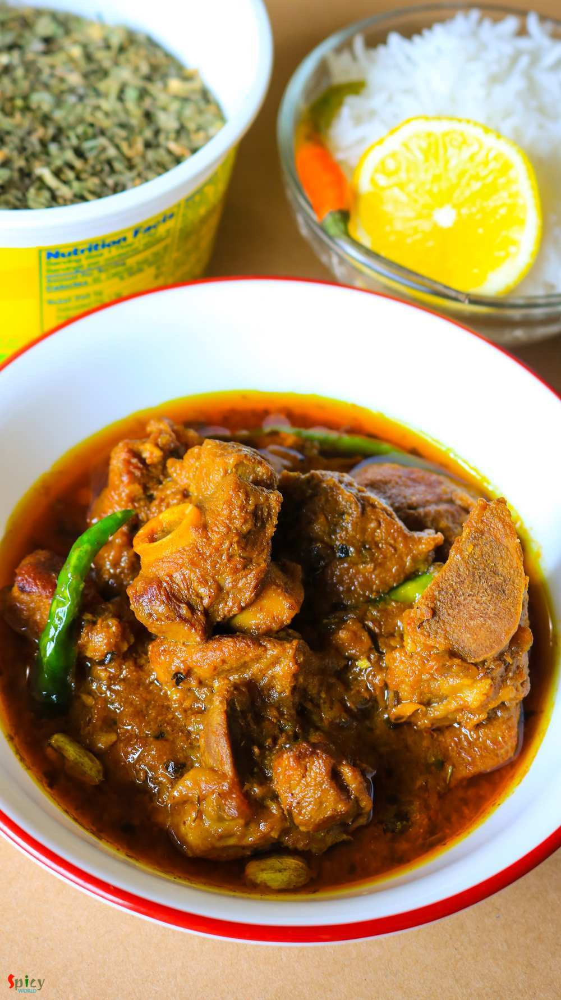

Simple and Easy Recipes
Dhaba style Mutton curry
© 2016 Spicy World, Published on: Aug 25, 2016
We all love to eat food from Dhaba (road side food joint) while traveling. Nowadays you can find many fake dhabas and taste of their food is also fake, nowhere close to the authentic ones. Luckily few old and original dhabas in India still sells the best meals. After tasting those foods, you will probably think that their cooks must have some kind of magical hands. I once tasted their 'mutton curry' .... a rich, creamy, flavourful gravy and juicy, succulent meat pieces. Last weekend I recreated the same dish in my kitchen and surprisingly he said it tastes exactly like that dhaba's mutton curry 😃😌. The recipe is very simple and easy to follow. Do try it at your home and enjoy a great lunch with your family.

Ingredients
- 500 grams of mutton pieces.
- 2 medium onion, thinly sliced.
- 2 Tablespoons coarse paste of ginger, garlic and green chilies.
- 3 Tablespoons of yogurt.
- Spice powder (1 Teaspoon of turmeric powder, 2 Teaspoons of hot red chilli powder, 1 Teaspoon of roasted cumin and coriander powder).
- 3 slitted green chilies.
- 1 Teaspoon of kasuri methi / dry fenugreek leaves.
- 1 Tablespoon of ghee / butter.
- 3 green cardamoms.
- 2 cloves.
- Salt and sugar.
- 3 Tablespoons of mustard oil.
- Hot water.
- 1 Tablespoon of grated raw papaya with skin.
- 1 charcoal.


Steps
Marinate the mutton with yogurt, raw papaya, ginger garlic green chili paste, salt, all of the spice powder and a Tablespoon of mustard oil. Keep it in fridge for at least 4 hours.
Heat the mustard oil in a pan. Fry the onion slices along with some salt until golden in color.
Add the marinated mutton pieces and cook for 15 minutes on medium flame.
Scrape the sides and keep stirring.
Now add hot water and a big pinch of sugar. Mix well and cook until the meat becomes tender. It will take 45 minutes to 1 hour. Use pressure cooker if you are in hurry.
When the meat becomes fully cooked , keep the curry on very low heat.
For the tempering, heat the ghee in another small pan.
Slightly pound the green cardamom and cloves in a bowl, then add them in the hot ghee along with slitted green chilies and saute for a minute. Then add crushed kasuri methi. Saute for few seconds and pour it all over the cooked mutton. Mix well.
Let it rest for few minutes, then serve. Before serving you can also add some chopped coriander leaves.
For the smokey flavor, heat a charcoal very well then place a steel bowl on the curry, put the hot charcoal in the bowl and add little ghee upon it. Immediately cover the vessel and let the smoke settle down for 2-3 minutes, then turn off the heat, remove the bowl and serve.
Your dhaba style mutton curry is ready ...
Serve this hot with plain rice or chapatis ...
")